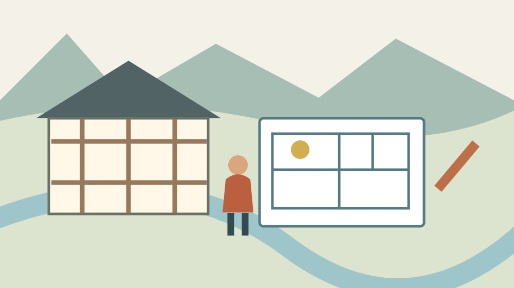
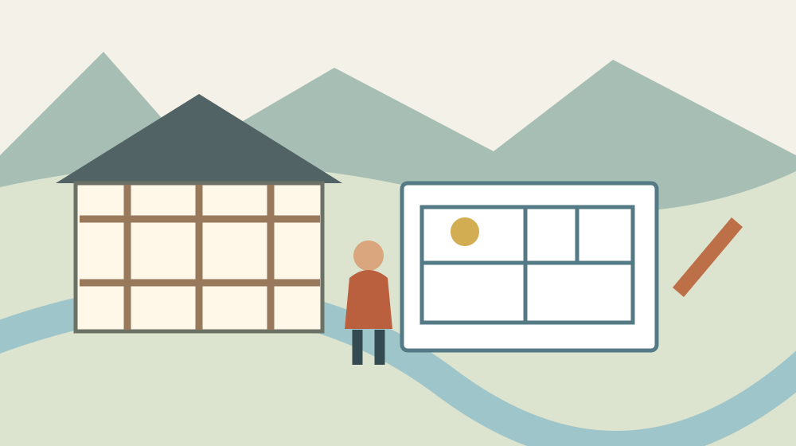
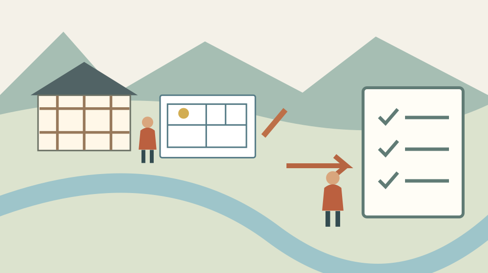

森町旧児童館跡地｜文化を伝える施設の計画
／ 寺社・歴史・文化

Q. 旧児童館の跡地には何ができるの？
森町旧児童館と旧静岡銀行森町支店の跡地は、伝統文化の体験学習・交流休憩などの拠点を整備する計画です。2026年1月14日更新の町公式案内と基本計画図から用途を確認できます。開館日や年間維持費は同案内では確認できません。今日は平面図の用途を一つ読み、使う人と支える人の動きを考えます。
文化を守ってきた人の手間から、建物の使い道を読む
森町の祭りや舞楽は、見に来る人がいない時間にも支えられています。道具の出し入れ、練習の日程調整、片付け、次の人への引継ぎ。文化を紹介する建物を考えるとき、まず思い浮かべたいのは、そうした役割を引き受けてきた町の人です。
旧児童館跡地の計画を見て、休憩できる場所が増えるなら助かる、と感じる方もいると思います。一方で、運営や維持費まで町で抱えられるのか、という疑問も自然です。期待と心配をどちらも残したまま、公開資料に書かれたことを整理します。
私、大石浩之（磐田市／不動産業）は、建物を造る話ほど、開け続ける手間を先に考えたいと思っています。これは現地を訪れた体験談ではなく、公開された計画を読む際の私の判断です。建築の形だけで、文化が引き継がれるとは決められません。
この記事の確認日は2026年9月16日です。中心に置く資料は、町の「森町旧児童館跡地及び周辺整備基本計画について」。掲載図は基本計画時点の検討案です。施設の完成、営業開始、予約受付を知らせる記事としては扱いません。
事実整理：旧児童館だけでなく、旧銀行の跡地も対象
森町の2026年1月14日更新の案内は、旧児童館と旧静岡銀行森町支店の跡地を対象にしています。名前だけを見ると児童館一棟の建替えのように思えますが、町は周辺も含めた整備として説明しています。計画を見る最初の意外な点は、対象が一つの跡地だけではないことです。
用途の中心は、伝統文化を体験して学ぶ機能と、来館者が交流・休憩する機能です。町は「森のまつり」や「遠江森町の舞楽」を挙げています。展示品を眺めるだけの建物という理解では、計画の意図を狭めてしまいます。
町の施設主用途には、伝統文化・観光案内、茶寮、イベントスペース、観光協会事務局が並びます。駐車場とレンタサイクルの受付も計画に含まれます。ただし、カフェの営業日、催しの回数、自転車の料金が決まったという意味ではありません。
文化を知る場所、休む場所、町内へ出発する場所を、一つの計画の中で考えていると読めます。私は、この組合せに可能性を感じます。家族の全員が同じ展示に興味を持たなくても、それぞれの過ごし方を持てる余地があるからです。
平面図では、用途と人の動きを別々に確認する
町が公開する基本計画の平面図は、建物の中で何をするかを考えるための入口です。図に書かれた部屋名と、そこにいる人の役割は同じではありません。部屋があることと、必要な時間に担当者がいることを分けて読みます。
例えば図面の受付という表示を見つけたら、まず来館者が案内を受ける場所として位置を確かめます。次に、案内する人が見渡せる範囲、入口との関係、ほかの用途との行き来を考えます。図面にない配置人数や開設時間までは補いません。
私は図面を見るとき、来館者の線と、道具を運ぶ人の線を二本に分けたいと思います。体験の準備と片付けが客の出入りと重なれば、面積だけでは分からない調整が生じるからです。これは完成後の不具合の指摘ではなく、計画を読むための問いです。
平面図に細かな寸法があっても、それを根拠に利用人数や車いすの通行可否を自己判断しません。家具の置き方や運営方法でも使いやすさは変わります。図面で気になった場所を一つ控え、利用条件が公表された段階で照合する方が確実です。

森町の暮らしへの影響：町中心部の拠点と各地区の文化
森町の文化財紹介では、遠江森町の舞楽を小國神社、天宮神社、山名神社の所在地とともに紹介しています。文化は町中心部の一施設だけに収まるものではありません。拠点で知ったことを、各地区の歴史へつなぐ視点が要ります。
私は、中心部で案内を受けられることと、地区の担い手が楽になることは、別に確かめるべきだと考えます。案内先が整理されれば問合せの行き違いを減らせる可能性があります。その反面、体験指導の依頼が同じ人に集中する形なら、負担は移るだけです。
駐車場やレンタサイクル受付の計画は、周辺を訪れる方法まで考える材料になります。ただ、自転車に乗れない人や、長く歩けない家族もいます。自宅から拠点へ着くまでと、拠点から目的地へ動くまでの二段階で、移動を考えるのがよさそうです。
今日できることは、家族が使いたい用途を一つ選ぶことです。休憩なのか、文化を学ぶことなのか、周辺の案内を受けることなのか。目的が一つ決まれば、今後の案内で確かめたいのも、座る場所、体験日、移動手段のどれかに絞れます。
良い点：文化に詳しくない人にも入口をつくれる
旧児童館跡地の計画の良い点は、学習、交流、休憩を一緒に考えていることです。私は、祭りの歴史を一から説明できない人でも立ち寄る理由を持てる点を評価します。詳しい人だけが入れる場所にしない設計は、後継を考える際にも意味があります。
茶寮という用途も、展示の脇に飲食を添えるだけとは限りません。森町のお茶をきっかけに会話が始まるなら、文化を知らない来館者と案内役をつなぐ接点になり得ます。実際の提供内容は未確認ですが、利用者の関心が違うことを受け止める余地はあります。
駐車や移動の案内と文化紹介をまとめて考える点にも利点があります。来館者が行き先や立寄り方を知ってから動ければ、現地で探し回る手間を減らせるかもしれません。施設単体の滞在だけでなく、周辺へ向かう前の準備の場所として読めます。
こうした利点は、案内が更新されることや、対応する範囲が明確なことを条件にします。私は「何でも聞いてください」より、ここで答えられることと、別の窓口へつなぐことが見える方が親切だと思います。担当者が一人で抱え込まないためでもあります。
注文したい点：開け続ける担当と費用を見たい
森町旧児童館跡地の基本計画案内だけでは、開館後の担当人数や年間維持費を確認できません。未掲載であることを、何も検討していない証拠にはできません。ただ、住民が継続性を判断するには、用途の説明とは別の運営情報が必要です。
私が知りたいのは、文化の説明、施設の受付、体験指導、清掃を、誰がどの範囲で担うのかです。すべてを同じ担当に寄せるのか、仕事を分けるのかで負担は変わります。開館時間だけでなく、準備と後片付けも仕事として見える案内を望みます。
体験を開く場合、講師が休む日や、後継が育つまでの期間もあります。毎回実演しなければ価値がない施設にすると、文化を守る側が疲れてしまいます。録画や資料展示で伝える日と、人が直接教える日を分ける考え方も、私は検討に値すると思います。
これは町が採用した運営案の紹介ではありません。担い手の時間を無限と見なさないための私の提案です。読者が今日できるのは、計画に賛成か反対かを決めることより、「この用途の担当は誰か」という質問を一つ残すことです。
維持費は、建設費とは別の財布で読む
文化施設の費用を読む際は、建設時にかかる支出と、開館後に続く支出を分けます。今回の基本計画案内には、どちらも確定額を確認できる記載がありません。数字がない以上、この記事で総事業費や一人当たり負担を計算することはしません。
一般的に運営を考える欄として、人件費、清掃、光熱、設備点検、修繕が挙げられます。これはこの施設の予算内訳ではなく、私が資料を読む際に用意する分類です。一つの合計額だけでは、毎年続く仕事と、設備更新の年に集中する支出が分かりません。
飲食や催しの収入があっても、そのまま維持費を賄えると決めることはできません。売上には仕入れや運営の支出も伴います。収入の見込みを見る場合は、その前提となる営業日や担当体制も一緒に示されているかを確かめたいと思います。
別の古い建物の改修費を、この跡地の費用だと思い込まないことも必要です。森町の古建築活用を比較した記事では、施設ごとの来歴と用途を分けています。資料名、対象建物、年度を一組にして控えると、数字の取り違えを防げます。

対案・結論：今日は図面の用途を一つ確かめる
森町旧児童館跡地の計画を知る最初の作業は、町公式案内から平面図を開き、用途を一つ確かめることです。受付など、読み取れた表示をそのまま一行に書きます。全部の部屋を理解する必要はありません。図が読みにくければ、本文の施設主用途から選べます。
次に、その用途を自分や家族が使う場面を一つ添えます。「休憩をしたい」「町の文化を知る入口がほしい」など、目的を書く段階です。施設に対する注文を大量に並べるより、実際に使う理由が分かる方が、必要な条件を整理できます。
最後に、用途を支える人への疑問を一つ書きます。受付なら対応する時間、体験なら予約と指導者の予定です。計画本文に答えがなければ未確認とします。自分の希望と町の決定を同じ欄に書かないことが、この小さな確認の締めになります。
問合せをする場合は、基本計画案内のどの用途について聞きたいのかを伝えます。例えば「文化体験の利用開始案内はどこで確認できますか」という聞き方です。開館日が分からない段階で、完成図だけを頼りに家族の訪問予定を決めないようにします。
家族に残す記録：図面の版と自分の希望を分ける
計画資料の記録には、施設名、資料名、確認日、見た用途、未確認事項を残します。基本計画時点の図であることも一緒に書きます。後から別の図が公表されたとき、昔の画像を完成後の配置だと思い込まないための工夫です。
家族と共有するなら、図面全体の画像だけを送らず、「私は受付の場所を見た」と一文添えます。同じ画像でも、ある人は駐車場、別の人は休憩場所を見ています。何を確認したかが分かれば、会話のすれ違いを減らせます。
地域の文化を支える役割を考えるなら、祭りを支える側の負担を考えた記事も参考になります。来場者の便利さと、準備する人の仕事を同じ紙に書く発想は、新しい施設を考える際にも使えます。
周辺の建物を見に行く場合は、森町の神社建築を読む記事で、建築を見る視点を確かめられます。文化財の紹介に載っていることと、常時内部を見学できることは別です。拠点の計画から周辺を知るときも、個別の公開条件を飛ばさないようにします。
大石の視点：建物の完成だけで文化の継承を評価しない
私は、旧児童館跡地に文化の入口をつくる方向を、まず前向きに受け止めます。その上で、建物の完成だけで文化の継承を評価しません。教える人が次の回も無理なく来られるか。掃除や設備更新に費用を回せるか。使う人と支える人の両方が続けられることを見たいと思います。
町の外に住む私が、町の人にもっと頑張れと言う話ではありません。既に文化を支えてきた人の時間と持ち出しを、新しい建物でさらに増やさないことが先です。建築の魅力は、その仕事を少しでも引き受ける仕組みと組み合わさってこそ、暮らしの利点になります。
迷いもあります。運営情報を求めすぎると、まだ基本計画を読む段階なのに、すべての答えを今すぐ出してほしいという話になりかねません。だから私は、未確認を批判の材料にせず、今後の案内で確かめる項目として残したいと思います。
今日の一歩は小さくて構いません。計画図で用途を一つ見つけ、その場所を使う人と支える人を一人ずつ思い浮かべる。誰かの実際の役割を断定せず、必要な仕事を想像してみる。その問いがあると、次に公表される運営情報も読みやすくなります。
まとめ：用途は読める、開館と維持費は別途確認する
森町旧児童館跡地の整備は、文化の体験学習と交流・休憩、周辺への案内を組み合わせた計画です。町公式案内から用途を確認できる一方、開館日、具体的な営業内容、年間維持費までは今回の資料で確定できません。
まず基本計画の平面図を開き、用途を一つ確認する。そのうえで、使う条件と担い手の仕事を一行ずつ残します。期待だけにも、不足の指摘だけにも寄らず、森町の文化を続けるために知りたいことを具体化する読み方です。
よくある質問
森町旧児童館跡地の整備を調べるときは、計画の用途と利用開始の案内を分けて確認します。
森町旧児童館跡地の施設は開館していますか？
2026年9月16日に確認した町の基本計画案内は、2026年1月14日更新で、外観図と平面図を基本計画時点の検討案として掲載しています。この案内だけでは開館済みとは判断できず、開館日も確認できません。訪問や利用予約を考える場合は、町の最新の開館案内と担当窓口で利用開始の状況を確認してください。
旧児童館跡地にはどんな使い道が計画されていますか？
森町は、旧児童館と旧静岡銀行森町支店の跡地で、伝統文化の体験学習、交流・休憩などの機能を整備する計画を示しています。施設主用途には観光案内、茶寮、イベントスペース、観光協会事務局が挙げられ、駐車場とレンタサイクル受付も案内されています。確定した営業内容や利用条件とは分けて読んでください。
建設費と年間維持費はいくらですか？
今回確認した町の基本計画案内と掲載平面図からは、建設費や年間維持費の確定額を確認できません。建物を整備する費用と、開館後の人件費・清掃・光熱費・修繕費は別に見る必要があります。数字を調べる際は、資料の年度、対象施設、事業の範囲を確かめ、別の文化施設の予算をこの計画へ転用しないでください。

参考にした公式情報
- 森町『森町旧児童館跡地及び周辺整備基本計画について』2026年1月14日更新（2026年9月16日確認）
- 森町『平面図（基本計画）』検討案（2026年9月16日確認）
- 森町『文化財』舞楽の所在地を確認（2026年9月16日確認）
最終確認日：2026-09-16。計画・制度・開催状況は変更される場合があります。最新情報は公式窓口へ、個別の法律・登記・保存上の判断は担当機関や専門家へ確認してください。